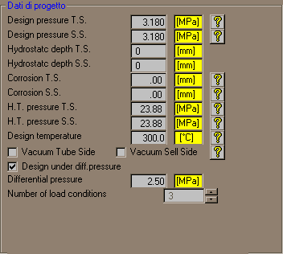

In tutti i casi diversi da 'fascio tubiero con teste fisse', non vi sono commenti particolari da fare. Occorre solo fare attenzione al segno della pressione differenziale. Infatti, nel caso di piastre tubiere per tubi ad U con estensione, non è la stessa cosa applicare la pressione differenziale dal lato cassa (segno +), o dal lato mantello (segno -). Il programma AsmeVip esegue entrambe le verifiche, indipendentemente dal segno del valore della pressione differenziale, che può essere diverso dalla differenza delle due pressioni di progetto, e che andrà sempre imputato senza segno.
Nel caso di teste fisse, non ha senso applicare la pressione differenziale da un lato, e zero dall'altro (vedi RCB-7.165, "simultaneous action of both shell and tube side pressures"). Nasce quindi un problema quando il cliente specifica una pressione differenziale diversa dalla differenza fra le due pressioni di progetto. In questo caso il programma AsmeVip crea automaticamente tre casi di carico (vedi Nb of load conditions):
Questo dato è presente solo nel caso di apparecchi a teste fisse. Oltre ai casi di funzionamento specificati dal cliente per la verifica delle dilatazioni differenziali tubi-mantello (sforzi longitudinali nei tubi e nel mantello, tensioni nelle piastre, carico sul giunto tubo-piastra, e, ove presente, verifica a fatica del dilatatore), è necessario includere una condizione di progetto, nella quale le pressioni siano quelle di progetto, gli ammissibili siano calcolati alle temperature di progetto, e le dilatazioni alle temperature di esercizio.